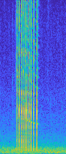
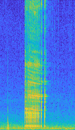
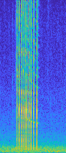
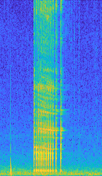

Post-Buzz Calls May Signal Attributes of Prey Within Foraging Groups of Long-Finned Pilot Whales
Anne E. Harshbarger1, Philippe Verborgh2, Pauline Gauffier2, Ruth Esteban2, Peter L. Tyack3, Renaud de Stephanis4, Andrew J. Read1, Frants H. Jensen5
1Duke University Marine Lab, 2Madeira Whale Museum, 3University of St. Andrews, 4CIRCE (Conservación, Información y Estudio sobre Cetáceos), 5Department of Ecoscience, Aarhus University, Denmark
International Bioacoustics Congress | September 7-12, 2025 | Kerteminde, Denmark
Thanks for visiting my poster at IBAC25! On this page you can view and listen to a gallery of long-finned pilot whale calls from different call clusters. Please contact me with any questions at anne.harshbarger@duke.edu


 


